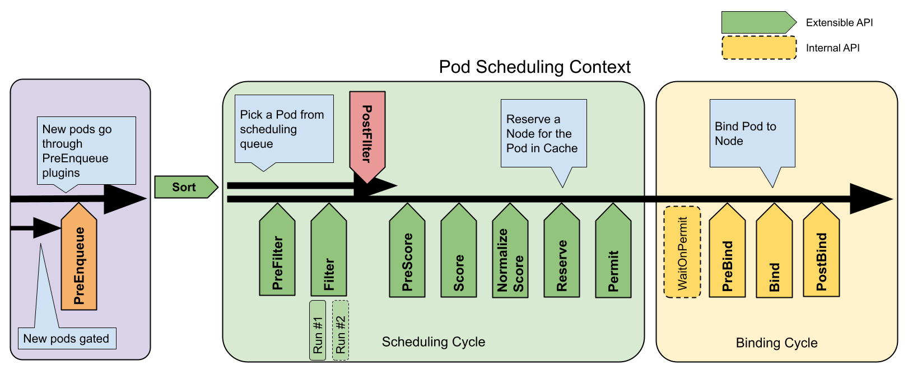

Feature state:
Stable since Kubernetes v1.19
The scheduling framework is a pluggable architecture for the Kubernetes scheduler. It consists of a set of "plugin" APIs that are compiled directly into the scheduler. These APIs allow most scheduling features to be implemented as plugins, while keeping the scheduling "core" lightweight and maintainable. Refer to the design proposal of the scheduling framework for more technical information on the design of the framework.
Framework workflow
The Scheduling Framework defines a few extension points. Scheduler plugins register to be invoked at one or more extension points. Some of these plugins can change the scheduling decisions and some are informational only.
Each attempt to schedule one Pod is split into two phases, the scheduling cycle and the binding cycle.
Scheduling cycle & binding cycle
The scheduling cycle selects a node for the Pod, and the binding cycle applies that decision to the cluster. Together, a scheduling cycle and binding cycle are referred to as a "scheduling context".
Scheduling cycles are run serially, while binding cycles may run concurrently.
A scheduling or binding cycle can be aborted if the Pod is determined to be unschedulable or if there is an internal error. The Pod will be returned to the queue and retried.
Interfaces
The following picture shows the scheduling context of a Pod and the interfaces that the scheduling framework exposes.
One plugin may implement multiple interfaces to perform more complex or stateful tasks.
Some interfaces match the scheduler extension points which can be configured through Scheduler Configuration.

PreEnqueue
These plugins are called prior to adding Pods to the internal active queue, where Pods are marked as ready for scheduling.
Only when all PreEnqueue plugins return Success, the Pod
is allowed to enter the active queue. Otherwise, it's placed in the
internal unschedulable Pods list, and doesn't get an
Unschedulable condition.
For more details about how internal scheduler queues work, read Scheduling queue in kube-scheduler.
EnqueueExtension
EnqueueExtension is the interface where the plugin can control whether to retry scheduling of Pods rejected by this plugin, based on changes in the cluster. Plugins that implement PreEnqueue, PreFilter, Filter, Reserve or Permit should implement this interface.
QueueingHint
Feature state:
Stable since Kubernetes v1.34; enabled by default
(SchedulerQueueingHints)
QueueingHint is a callback function for deciding whether a Pod can be requeued to the active queue or backoff queue. It's executed every time a certain kind of event or change happens in the cluster. When the QueueingHint finds that the event might make the Pod schedulable, the Pod is put into the active queue or the backoff queue so that the scheduler will retry the scheduling of the Pod.
QueueSort
These plugins are used to sort Pods in the scheduling queue. A queue
sort plugin essentially provides a Less(Pod1, Pod2)
function. Only one queue sort plugin may be enabled at a time.
PreFilter
These plugins are used to pre-process info about the Pod, or to check certain conditions that the cluster or the Pod must meet. If a PreFilter plugin returns an error, the scheduling cycle is aborted.
Filter
These plugins are used to filter out nodes that cannot run the Pod. For each node, the scheduler will call filter plugins in their configured order. If any filter plugin marks the node as infeasible, the remaining plugins will not be called for that node. Nodes may be evaluated concurrently.
PostFilter
These plugins are called after the Filter phase, but only when no
feasible nodes were found for the pod. Plugins are called in their
configured order. If any postFilter plugin marks the node as
Schedulable, the remaining plugins will not be called. A
typical PostFilter implementation is preemption, which tries to make the
pod schedulable by preempting other Pods.
PreScore
These plugins are used to perform "pre-scoring" work, which generates a sharable state for Score plugins to use. If a PreScore plugin returns an error, the scheduling cycle is aborted.
Score
These plugins are used to rank nodes that have passed the filtering phase. The scheduler will call each scoring plugin for each node. There will be a well defined range of integers representing the minimum and maximum scores. After the NormalizeScore phase, the scheduler will combine node scores from all plugins according to the configured plugin weights.
Capacity scoring
Feature state:
Beta since Kubernetes v1.37; enabled by default
(StorageCapacityScoring)
The feature gate VolumeCapacityPriority was used in
v1.32 to support storage that are statically provisioned. Starting from
v1.33, the new feature gate StorageCapacityScoring replaces
the old VolumeCapacityPriority gate with added support to
dynamically provisioned storage. When
StorageCapacityScoring is enabled, the VolumeBinding plugin
in the kube-scheduler is extended to score Nodes based on the storage
capacity on each of them. This feature is applicable to CSI volumes that
supported Storage
Capacity, including local storage backed by a CSI driver.
NormalizeScore
These plugins are used to modify scores before the scheduler computes a final ranking of Nodes. A plugin that registers for this extension point will be called with the Score results from the same plugin. This is called once per plugin per scheduling cycle.
For example, suppose a plugin BlinkingLightScorer ranks
Nodes based on how many blinking lights they have.
func ScoreNode(_ *v1.pod, n *v1.Node) (int, error) {
return getBlinkingLightCount(n)
}However, the maximum count of blinking lights may be small compared
to NodeScoreMax. To fix this,
BlinkingLightScorer should also register for this extension
point.
func NormalizeScores(scores map[string]int) {
highest := 0
for _, score := range scores {
highest = max(highest, score)
}
for node, score := range scores {
scores[node] = score*NodeScoreMax/highest
}
}If any NormalizeScore plugin returns an error, the scheduling cycle is aborted.
Note:
Plugins wishing to perform "pre-reserve" work should use the NormalizeScore extension point.
Reserve
A plugin that implements the Reserve interface has two methods,
namely Reserve and Unreserve, that back two
informational scheduling phases called Reserve and Unreserve,
respectively. Plugins which maintain runtime state (aka "stateful
plugins") should use these phases to be notified by the scheduler when
resources on a node are being reserved and unreserved for a given
Pod.
The Reserve phase happens before the scheduler actually binds a Pod
to its designated node. It exists to prevent race conditions while the
scheduler waits for the bind to succeed. The Reserve method
of each Reserve plugin may succeed or fail; if one Reserve
method call fails, subsequent plugins are not executed and the Reserve
phase is considered to have failed. If the Reserve method
of all plugins succeed, the Reserve phase is considered to be successful
and the rest of the scheduling cycle and the binding cycle are
executed.
The Unreserve phase is triggered if the Reserve phase or a later
phase fails. When this happens, the Unreserve method of
all Reserve plugins will be executed in the reverse
order of Reserve method calls. This phase exists to clean
up the state associated with the reserved Pod.
Caution:
The implementation of the Unreserve method in Reserve
plugins must be idempotent and may not fail.
Permit
Permit plugins are invoked at the end of the scheduling cycle for each Pod, to prevent or delay the binding to the candidate node. A permit plugin can do one of the three things:
approve
Once all Permit plugins approve a Pod, it is sent for binding.deny
If any Permit plugin denies a Pod, it is returned to the scheduling queue. This will trigger the Unreserve phase in Reserve plugins.wait (with a timeout)
If a Permit plugin returns "wait", then the Pod is kept in an internal "waiting" Pods list, and the binding cycle of this Pod starts but directly blocks until it gets approved. If a timeout occurs, wait becomes deny and the Pod is returned to the scheduling queue, triggering the Unreserve phase in Reserve plugins.
Note:
While any plugin can access the list of "waiting" Pods and approve
them (see FrameworkHandle),
we expect only the permit plugins to approve binding of reserved Pods
that are in "waiting" state. Once a Pod is approved, it is sent to the
PreBind phase.
PreBind
These plugins are used to perform any work required before a Pod is bound. For example, a pre-bind plugin may provision a network volume and mount it on the target node before allowing the Pod to run there.
If any PreBind plugin returns an error, the Pod is rejected and returned to the scheduling queue.
Bind
These plugins are used to bind a Pod to a Node. Bind plugins will not be called until all PreBind plugins have completed. Each bind plugin is called in the configured order. A bind plugin may choose whether or not to handle the given Pod. If a bind plugin chooses to handle a Pod, the remaining bind plugins are skipped.
PostBind
This is an informational interface. Post-bind plugins are called after a Pod is successfully bound. This is the end of a binding cycle, and can be used to clean up associated resources.
Plugin API
There are two steps to the plugin API. First, plugins must register and get configured, then they use the extension point interfaces. Extension point interfaces have the following form.
type Plugin interface {
Name() string
}
type QueueSortPlugin interface {
Plugin
Less(*v1.pod, *v1.pod) bool
}
type PreFilterPlugin interface {
Plugin
PreFilter(context.Context, *framework.CycleState, *v1.pod) error
}
// ...Plugin configuration
You can enable or disable plugins in the scheduler configuration. If you are using Kubernetes v1.18 or later, most scheduling plugins are in use and enabled by default.
In addition to default plugins, you can also implement your own scheduling plugins and get them configured along with default plugins. You can visit scheduler-plugins for more details.
If you are using Kubernetes v1.18 or later, you can configure a set of plugins as a scheduler profile and then define multiple profiles to fit various kinds of workload. Learn more at multiple profiles.